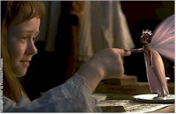
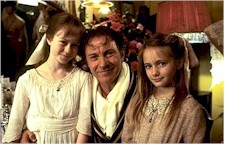
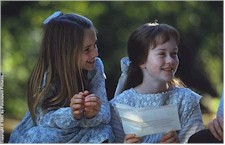

"It is a trick," intones Harry Houdini (Harvey Keitel) by way of explaining a bit of hocus pocus to a group he's just dazzled at the dinner table of Sir Arthur Conan Doyle (Peter O'Toole). "But, I hope, a very good one." Sadly, the movie magic of FairyTale: A True Story, while indeed very good, is only intermittently enchanting; proof, once again, that special effects don't necessarily make a movie special.

In 1917, as England is demoralized by World War One and the ravages inflicted by it on the country's young men, two girls are brought together as a direct result of the conflict. With her mother dead and her father fighting in Europe, 10-year-old Frances Griffith (Elizabeth Earl) arrives from Africa to live with her Aunt Polly (Phoebe Nicholls) and Uncle Arthur (Paul McGann, the "I" in Bruce Robinson's scabrously funny 1986 British cult film Withnail & I) and their 12-year-old daughter Elsie (Florence Hoath) in a picturesque Yorkshire village. Along with her brother Joseph, who has since died of pneumonia, Elsie fancies herself an expert on the fairies she claims live "at the bottom of the garden" (near a brook some ways from the house) and has many drawings to validate these sightings.Using a camera "borrowed" on impulse, the girls disappear into the dell and emerge with photographs of the fairies. An attempt to keep the pictures secret is short-lived, as copies are passed by Aunt Polly to renown Theosophist Edward Gardner (Bill Nighy) and to the then-popular author and spiritualist Conan Doyle, who believes so much in the magical images (he's grief-stricken over losing a son in the war) that he writes a book on the subject. He also engages in good-natured debate with Houdini, who is skeptical of such otherworldly things but genuinely charming to the girls. Meanwhile, conniving reporter John Ferret (Tim McInnerny) tracks down the bucolic village and the house and grounds are soon overrun by strangers desperate to catch their very own sprite (one hunter even brings a butterfly net).
The climax provides the movie's most magical scene, as the girls are visited in the attic bedroom they share by what seems to be the entire colony of fairies at about the same time Frances' father (an uncredited Mel Gibson) arrives home from the war unannounced.

The events are based on a fascinating true story, although the movie never clarifies this. It seems there really were two girls in England who produced photographs which inspired a forerunner to the almost daily media circuses of today. Although there's no doubt in the film that the fairies exist – they're onscreen not long into the picture – the actual taking of the photos occurs offscreen, and the reporter's discovery of fairy cutouts in Joseph's bedroom indicates that the movie still wants to create an air of "do-they-or-don't-they" mystery about the fairies' existence.But by emphasizing this sense of wonder, the filmmakers squander the opportunity to create a lively and insightful tension between the melancholy Conan Doyle and the strapping Houdini that would have driven home the era's conflicts between the spiritual and the worldly with much more power and clarity. And when the movie finally does create the fairy world, Gibson shows up and gets the audience whispering so much that the spell is immediately broken.

One need only compare FairyTale to the thematically similar – and sadly overlooked – 1995 production A Little Princess (an orphaned girl, an attic wonderland, the World War I era) to begin to see where things might have gone wrong. FairyTale has a hushed tone throughout, as if it was so awed with itself that reverence overcame exuberance. This is a fatal flaw for a film that styles itself as family oriented, as the compromised results are too stately and complex for children and too uninvolving for adults.Other than the fairy effects themselves, which are utterly convincing (each, uh, little entity is given a name in the closing credits), the other behind-the-camera standout is Polish composer Zbigniew Preisner (the Kieslowski trilogy Blue/White/Red), whose music goes a long way towards giving the film it's special mood.
A note about the title, for those who follow such things: transcribed as "Fairytale," and "Fairy Tale" in various reviews, the title on the screen and in the adds appears to favor the latter, although the words are close enough together to suggest the more evocative "FairyTale." Whichever you prefer, the confusion is indicative of the movie's fundamental conflict. "Masters of illusion never reveal their secrets," Houdini tells another knot of people, palpably yearning for insight to the confusion and pain of the era that they're hardly in touch with. In the end, FairyTale: A True Story could have benefited enormously from a great deal more emotional revelation than it is willing to offer.